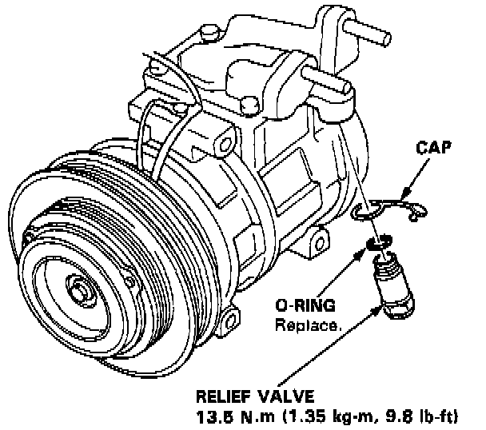

High Pressure Safety Valve HVAC: Service and Repair

1. Remove the relief valve and 0-ring. Don't let any compressor oil run out.
2. Clean off the 0-ring seating surface.
3. Apply compressor oil to the new 0-ring.
4. Install and tighten the relief valve.
Torque to: 13.5 Nm (9.8 lb-ft)
5. Charge the system and check for leaks, then push the cap into the valve.